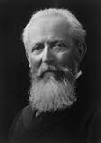

FRANCOIS RAOULT

Introduction
François-Marie Raoult (10 May 1830 - 1 April 1901) was a French chemist who conducted research into the behavior of solutions, especially their physical properties.
About Raoult
Raoult was born at Fournes, in the département of Nord. He became aspirant répétiteur at the Lycée of Reims in 1853, and after holding several intermediate positions was appointed in 1862 to the professorship of chemistry in Sens lycée. There he prepared a thesis on electromotive force which gained him a doctor's degree in Paris the following year.
In 1867 Raoult was put in charge of chemistry classes at Grenoble, and three years later he succeeded to the chair of chemistry, which he held until his death in 1901. Raoult's earliest researches were physical in character, being largely concerned with the phenomena of the voltaic cell; later there was a period when more purely chemical questions engaged his attention.
Raoult’s work
Raoult's name is best known in connection with work on solutions, to which he devoted the last two decades of his life. His first paper describing how solutes depressed the freezing points of solutions was published in 1878. Further experiments with various solvents, such as benzene and acetic acid, in addition to water, led him to believe in a simple relation between the molecular weights of a solute and the freezing-point of a solution. He expressed the relationship as the loi générale de la congélation, that if one molecule of a substance be dissolved in 100 molecules of any given solvent, the temperature of solidification of the latter will be lowered by 0.63 °C. Another relation on which Raoult worked was that concerning the depression of a solvent's vapor pressure, due to a solute, showing that the decrease is proportional to the solute's molecular weight. This relationships holds best in the limiting case of a dilute solution. These two generalizations afforded a new method of determining the molecular weights of dissolved substances, and were utilized by Jacobus van 't Hoff and Wilhelm Ostwald, among other chemists, in support of the hypothesis of electrolytic dissociation in solutions. Raoult's freezing-point depression method became even more useful after it was improved by Ernst Otto Beckmann and became a standard technique for determining molecular weights of organic substances.
An account of Raoult's life and work was given by Professor van 't Hoff in a memorial lecture delivered before the London Chemical Society on the 26th of March 1902.